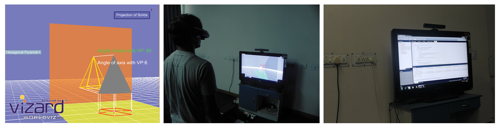
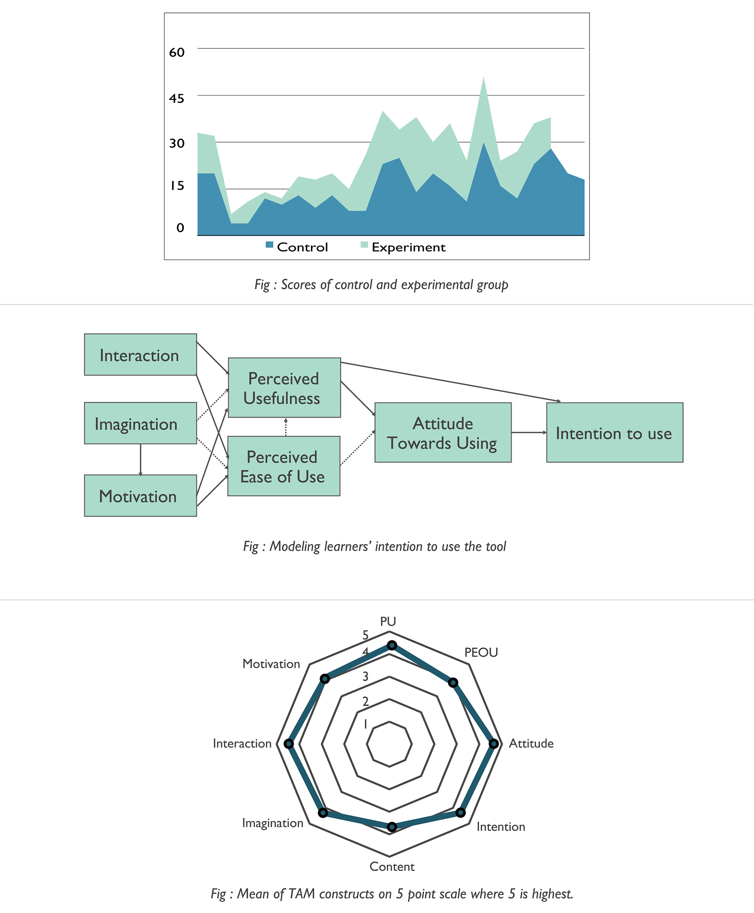

1. OVERVIEW
Freshman year students in architecture programs have to study the
fundamental course of “engineering drawing” or “architectural graphics”.
The goal of the course is to enhance students’ spatial thinking.
However, most students find the learning curve to be steep,
since they are primarily used to 2D mental visualizations.
2. SOLUTION
Āyāma, meaning 'dimension' in Sanskrit, is an immersive VR platform that aids
the aforementioned course of “engineering drawing”.
It scaffolds students’ learning as they are introduced to topics of
visualization of objects and its projections in 3D space.
Students can freely manipulate objects’ orientation in 3D space,
and watch changes in projections in real time
3. PROCESS
3.1 CONTEXTUAL INQUIRY
We used contextual inquiry as our primary research method.
Our core users were first year undergraduate architecture students.
We observed classes and discussion sessions in progress.
This helped us capture the experiences and struggles of students with the course.
We also conducted qualitative interviews with instructors and tutors.
In parallel, we conducted literature review on learning and cognition models.
We analyzed the collected qualitative data by means of an affinity wall.

3.2 INSIGHTS
Our key insight was that students’ initiation into architectural graphics is not smooth.In the context of Indian students, up until high school none of the courses requires spatial thinking. Come first semester of college, and students are expected to visualize and orient objects mentally without any prior experience. Thus, a platform which can support their transition into 3D thinking would scaffold their learning, and make the course fundamentals easier to grasp.
3.3 RECOMMENDED SOLUTION
Our insights translated into the following features for the proposed solution :
- Aid in 3D visualization without losing the established rules of the course.
- Link to coordinate geometry since students are comfortable with "math of 3D space".
- Enable students to "learn by doing" for best learning.
- Decrease the conceptual distance between theory and projections.
The literature review had identified different tools used to design for
architecture education. Among the various tools and technologies, we found immersive VR
to be best suited for our solution. It allowed users to perceive
and interact with objects in manners similar to the real world. We therefore decided
to go forwared with immersive VR, and started thinking about concepts and solutions anchored in the medium.
We prototyped our final solution using Vizard, a Python VR toolkit.
4. PROTOTYPE & PILOT TESTING
We simulated 3D objects students commonly encounter in the course -
pyramids, cubes, etc. Projections of the simulations are mapped on vertical,
horizontal and profile planes. The simulations could be manipulated freely
along the three axes of rotations. Changes to the simulations and their
projections were updated simultaneously. The conventions of the course were
followed in the prototype. We pilot tested the prototype to improve the usability.

5. CONTROLLED EXPERIMENT
Next, a controlled experiment was conducted to gauge its effectiveness as a
learning tool. Results were significant and in favor. We also used technology
acceptance model or TAM to model attitudes of users towards using the technology.
It showed high inclination towards using the tool.

6. PUBLICATIONS
- Pandey, M., Luthra, V., Yammiyawar, P. G., & Yammiyawar, P. (2014). Role of immersive VR in fostering creativity among architecture students. In 3rd International Conference of Design Creativity.
- Pandey, M., Luthra, V., Yammiyawar, P. G., & Yammiyawar, A. P. (2014). Virtual Reality Based Learning Aid to Understand Projection and Section of Solids in Architectural Graphics. In HCI International 2014-Posters’ Extended Abstracts (pp. 625-630). Springer International Publishing.